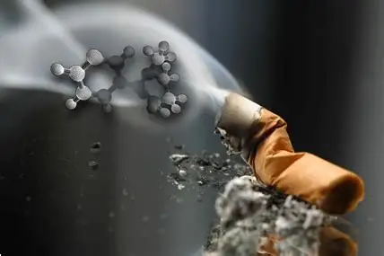
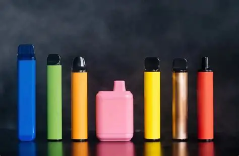
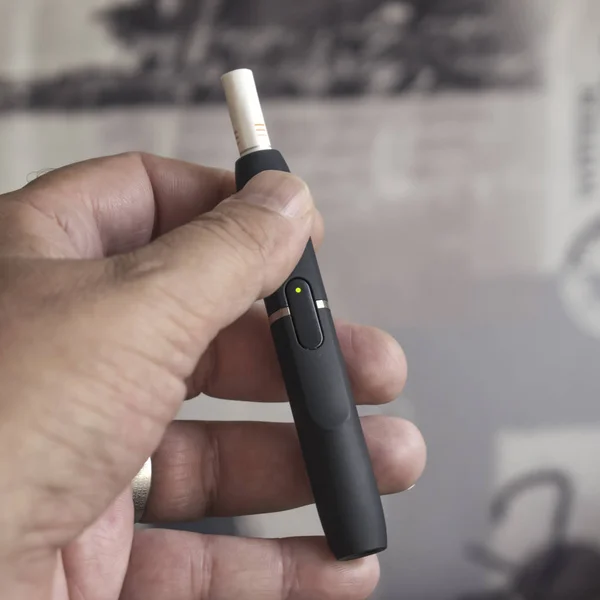
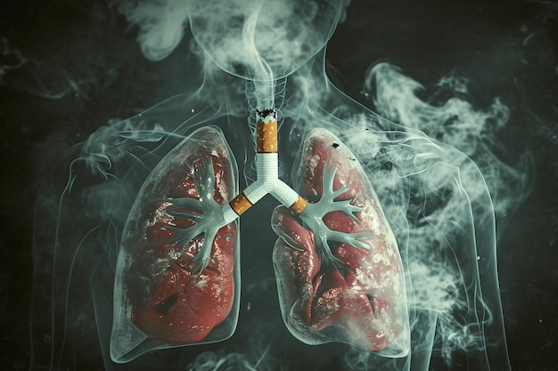
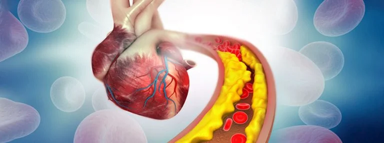
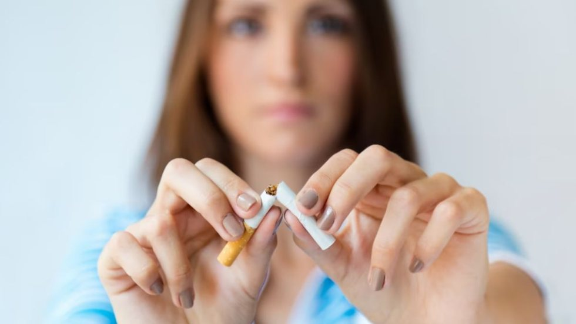

Tabaco e Novas Formas de Consumo
O consumo de tabaco continua a ser um dos maiores desafios para a saúde pública em todo o mundo.
Além dos cigarros tradicionais, surgiram novas formas de consumo, como os cigarros eletrónicos,
os pods e os dispositivos de tabaco aquecido. Embora sejam frequentemente apresentados como
alternativas menos prejudiciais, continuam a representar riscos para a saúde. Neste site vais
conhecer os diferentes tipos de consumo de tabaco, os seus impactos no organismo e a importância
da prevenção.
Sobre o Tabaco
Tabaco Tradicional
O tabaco é uma planta utilizada na produção de cigarros, charutos e outros produtos. Quando queimado, liberta milhares de substâncias químicas, incluindo várias consideradas cancerígenas. O seu consumo está associado a milhões de mortes todos os anos.
Nicotina
A nicotina é a principal substância responsável pela dependência. Ao chegar rapidamente ao cérebro, provoca sensações temporárias de prazer, levando o consumidor a querer repetir a experiência.

Fumo Passivo
O fumo afeta não apenas os fumadores, mas também as pessoas que os rodeiam. Crianças, idosos e pessoas com problemas respiratórios são especialmente vulneráveis.
Novas Formas de Consumo
Vapes
Os cigarros eletrónicos aquecem um líquido que pode conter nicotina, aromas e outras substâncias químicas. Apesar de não produzirem fumo tradicional, podem causar dependência e problemas respiratórios.

Pods
Os pods são dispositivos compactos e discretos, frequentemente utilizados por jovens. Muitos contêm níveis elevados de nicotina, aumentando o risco de dependência.

Tabaco Aquecido
Estes dispositivos aquecem o tabaco sem o queimar diretamente. Embora produzam menos substâncias tóxicas do que os cigarros tradicionais, continuam a apresentar riscos para a saúde.

Impactos na Saúde
Pulmões
O consumo de tabaco aumenta o risco de bronquite crónica, enfisema pulmonar e cancro do pulmão, além de reduzir a capacidade respiratória.

Coração
Fumar aumenta a pressão arterial e favorece a acumulação de gordura nas artérias, elevando o risco de enfarte e AVC.

Dependência
A nicotina provoca forte dependência química, podendo causar ansiedade, irritabilidade e dificuldade de concentração quando o consumo é interrompido.

Prevenção e Soluções
A prevenção é fundamental para reduzir o consumo de tabaco. A informação e a educação ajudam os jovens a compreender os riscos associados ao consumo. Para quem pretende deixar de fumar, existem consultas médicas, terapias de substituição da nicotina e programas de apoio especializados. A prática de exercício físico e a adoção de hábitos saudáveis contribuem para melhorar a qualidade de vida e reduzir a dependência.
Contactos de Apoio ao Tabagismo
Se pretende deixar de fumar ou obter mais informações sobre a cessação tabágica, pode recorrer às seguintes entidades de apoio:
-
Liga Portuguesa Contra o Cancro
Consultas gratuitas de cessação tabágica, presenciais ou online.
Email: cessacaotabagica.nrs@ligacontracancro.pt
Telefone: 217 264 099 (09h00 às 18h00)
Telemóvel: 912 732 946 (08h30 às 13h00 e 14h00 às 16h30)
-
IQOS Portugal
Apoio em tempo real através da assistente digital ISA, disponível 24 horas por dia, 7 dias por semana, bem como atendimento por especialistas.
-
Centro de Medicina Digital P5
Programa de Cessação Tabágica com aconselhamento clínico e psicológico especializado para ajudar os fumadores a abandonar o consumo.
-
Unidade de Desabituação Tabágica do Hospital CUF Porto
Disponibiliza acompanhamento médico especializado e planos personalizados para apoiar a cessação tabágica.
Estas entidades disponibilizam apoio profissional, informação e recursos que podem aumentar significativamente as probabilidades de sucesso na cessação do tabagismo, contribuindo para uma melhor qualidade de vida e para a prevenção de doenças relacionadas com o consumo de tabaco.
Sobre Mim
O meu nome é Frederico Pinho e sou aluno da
Escola Profissional do Infante.
Escolhi desenvolver este trabalho sobre o tema
"Tabaco e Novas Formas de Consumo" por considerar
que é um assunto muito importante para a sociedade atual,
especialmente para os jovens.
Nos últimos anos, produtos como os cigarros eletrónicos, os pods e o
tabaco aquecido tornaram-se cada vez mais populares. Muitas pessoas
acreditam que estas alternativas são totalmente seguras, mas continuam
a existir riscos para a saúde e para o desenvolvimento da dependência
da nicotina.
Com este site pretendo sensibilizar os visitantes para os perigos do
consumo de tabaco e informar sobre os seus efeitos no organismo,
contribuindo para uma maior consciencialização e para a adoção de
hábitos de vida mais saudáveis.